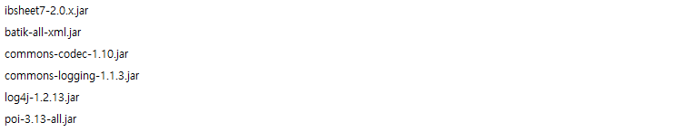
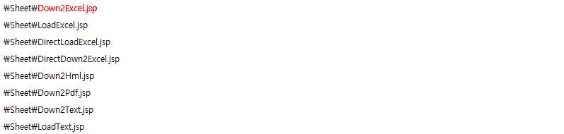

엑셀 다운로드를 사용하기 위한 준비
IBSheet7에서는 그리드의 내용을 엑셀 문서로 만들어 주기 위해서 Down2Excel 이라는 함수를 제공하고 있습니다.
하지만 엑셀 다운로드를 위한 설정이 제대로 되지 않은 상태에서 Down2Excel함수를 호출할 경우 404(Not Found) 또는 500(Internal Server Error) 등이 발생 합니다.
정상적으로 엑셀 기능을 사용하기 위해서는 다음과 같은 설정이 필요 합니다.
Step1 : 서버모듈 설치
엑셀 다운을 하기 위해서는 서버에 poi라이브러리 및 추가 종속 라이브러리가 올라가 있어야 합니다.
아래 라이브러리를 WAS에 올려 주세요. (각 라이브러리는 제품이 배포되는 시점에 포함되서 제공됩니다.)

Step2 : 엑셀 다운 설정 파일 복사
제품이 배포되는 시점에 서버모듈과 마찬가지로 각 종 기능(엑셀다운,업로드)들을 설정할 수 있도록 여러 파일들은 제공하고 있는데, 아래 파일을 사용자가 지정한 특정 경로에 복사 합니다.

Step3 : ibsheet.cfg 경로 설정
각 기능을 처리하는 jsp파일의 경로를 아래와 같이 지정하게 되면 비로소 Down2Excel과 같은 함수를 사용할 수 있습니다.
{
"Cfg" : {
"Down2Excel_Url" : "../jsp/Down2Excel.jsp", // << 엑셀 다운
"Down2Hml_Url" : "../jsp/Down2Hml.jsp",
"LoadExcel_Url" : "../jsp/LoadExcel.jsp",
"DirectLoadExcel_Url" : "../jsp/DirectLoadExcel.jsp",
"Down2Text_Url" : "../jsp/Down2Text.jsp",
"LoadText_Url" : "../jsp/LoadText.jsp",
"Down2Pdf_Url" : "../jsp/Down2Pdf.jsp"
}
}